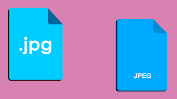

JPEG (JPG) es uno de los formatos de imagen más comunes en la web. Ideal
para fotografías y gradientes suaves debido a su compresión con pérdida, lo que reduce
el tamaño del archivo sin perder demasiada calidad visual.
Usos: Fotografías, imágenes de productos, gráficos complejos.
Ventajas: Alta compresión, tamaño de archivo pequeño.
Desventajas: No admite transparencia, pérdida de calidad por
compresión.
Activo
12-01-2024
Formato PNG
PNG es un formato sin pérdida de calidad que admite transparencia. Ideal
para gráficos, logotipos e imágenes con un fondo transparente.
Usos: Logotipos, iconos, gráficos, imágenes con transparencia.
Ventajas: Soporta transparencia, sin pérdida de calidad.
Desventajas: Archivos más grandes comparados con otros formatos
como JPEG.
Activo
20-02-2024
Formato WebP
WebP es un formato moderno desarrollado por Google, que ofrece
compresión eficiente tanto con pérdida como sin pérdida, y es más eficiente que JPEG y
PNG. Soporta transparencia y animación.
Ventajas: Alta compresión, soporte de transparencia y animaciones.
Desventajas: No es compatible con todos los navegadores.
Activo
30-03-2024
Formato AVIF
AVIF es un formato de imagen de nueva generación que utiliza el códec
AV1. Ofrece una compresión superior a WebP, lo que permite imágenes de alta calidad a un
tamaño de archivo más pequeño.
Usos: Fotografías de alta calidad, imágenes web.
Ventajas: Mejor compresión que WebP y JPEG, calidad superior.
Desventajas: Soporte limitado en algunos navegadores.
Activo
18-06-2024
Formato SVG
SVG es un formato de gráficos vectoriales basado en XML. A diferencia de
los formatos rasterizados como JPEG y PNG, SVG es independiente de la resolución, lo que
significa que no pierde calidad al ser escalado.
Usos: Logotipos, iconos, gráficos vectoriales.
Ventajas: Escalable sin pérdida de calidad, tamaño de archivo
pequeño, manipulable con CSS y JavaScript.
Desventajas: No es adecuado para imágenes fotográficas.
Activo
10-09-2024
Propiedades de Fondo en CSS
En CSS, background-image permite establecer una imagen de fondo. A
continuación, algunas propiedades asociadas:
background-position: Define la posición de la imagen de fondo.
background-size: Controla el tamaño de la imagen (usando valores
como cover o contain).
background-attachment: Define si la imagen se desplaza con el
contenido o se mantiene fija (fixed).
Activo
31-10-2024
Objetos en CSS: Controlando Imágenes con object
Las propiedades CSS object-fit, object-position, y
object-view-port nos permiten controlar cómo se visualizan las imágenes
dentro de un contenedor, especialmente en la etiqueta <img>:
object-fit: Controla cómo se ajusta la imagen dentro del contenedor
(ej. cover, contain).
object-position: Define la posición de la imagen dentro del
contenedor.
object-view-port: Establece el área visible dentro del contenedor
(específico para elementos de tipo object, no para imágenes).
Activo
18-12-2024
Filtros CSS para Imágenes
Los filtros en CSS permiten cambiar aspectos visuales de las imágenes como brillo,
saturación y más.
brightness: Ajusta el brillo de una imagen.
saturate: Cambia la saturación de los colores.
sepia: Aplica un filtro sepia a la imagen.
Activo
Ver Publicación

Formato JPEG (JPG)
JPEG (JPG) es uno de los formatos de imagen más
comunes en la web. Ideal
para fotografías y gradientes suaves debido a su compresión con
pérdida, lo que reduce
el tamaño del archivo sin perder demasiada calidad visual.
Usos: Fotografías, imágenes de productos,
gráficos complejos.
Ventajas: Alta compresión, tamaño de archivo
pequeño.
Desventajas: No admite transparencia, pérdida
de calidad por
compresión.
Ver Publicación
Formato PNG
PNG es un formato sin pérdida de calidad que admite transparencia. Ideal
para gráficos, logotipos e imágenes con un fondo transparente.
Usos: Logotipos, iconos, gráficos, imágenes con transparencia.
Ventajas: Soporta transparencia, sin pérdida de calidad.
Desventajas: Archivos más grandes comparados con otros formatos
como JPEG.
Ver Publicación
Formato WebP
WebP es un formato moderno desarrollado por Google, que ofrece
compresión eficiente tanto con pérdida como sin pérdida, y es más eficiente que JPEG y
PNG. Soporta transparencia y animación.
Ventajas: Alta compresión, soporte de transparencia y animaciones.
Desventajas: No es compatible con todos los navegadores.
Ver Publicación
Formato AVIF
AVIF es un formato de imagen de nueva generación que utiliza el códec
AV1. Ofrece una compresión superior a WebP, lo que permite imágenes de alta calidad a un
tamaño de archivo más pequeño.
Usos: Fotografías de alta calidad, imágenes web.
Ventajas: Mejor compresión que WebP y JPEG, calidad superior.
Desventajas: Soporte limitado en algunos navegadores.
Ver Publicación
Formato SVG
SVG es un formato de gráficos vectoriales basado en XML. A diferencia de
los formatos rasterizados como JPEG y PNG, SVG es independiente de la resolución, lo que
significa que no pierde calidad al ser escalado.
Usos: Logotipos, iconos, gráficos vectoriales.
Ventajas: Escalable sin pérdida de calidad, tamaño de archivo
pequeño, manipulable con CSS y JavaScript.
Desventajas: No es adecuado para imágenes fotográficas.
Ver Publicación
Propiedades de Fondo en CSS
En CSS, background-image permite establecer una imagen de fondo. A
continuación, algunas propiedades asociadas:
background-position: Define la posición de la imagen de fondo.
background-size: Controla el tamaño de la imagen (usando valores
como cover o contain).
background-attachment: Define si la imagen se desplaza con el
contenido o se mantiene fija (fixed).
Las propiedades CSS object-fit, object-position, y
object-view-port nos permiten controlar cómo se visualizan las imágenes
dentro de un contenedor, especialmente en la etiqueta <img>:
object-fit: Controla cómo se ajusta la imagen dentro del contenedor
(ej. cover, contain).
object-position: Define la posición de la imagen dentro del
contenedor.
object-view-port: Establece el área visible dentro del contenedor
(específico para elementos de tipo object, no para imágenes).